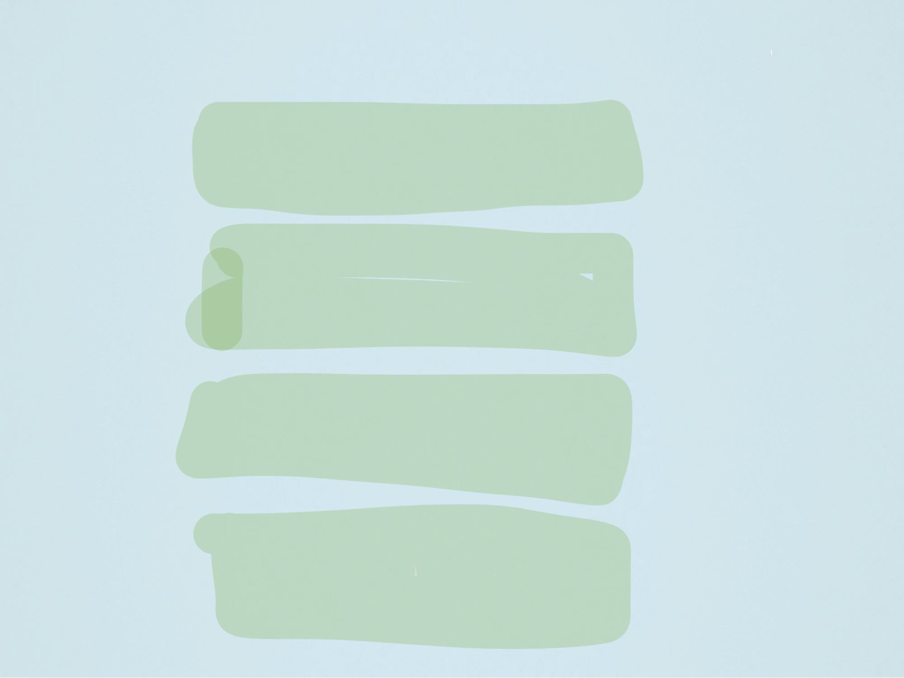
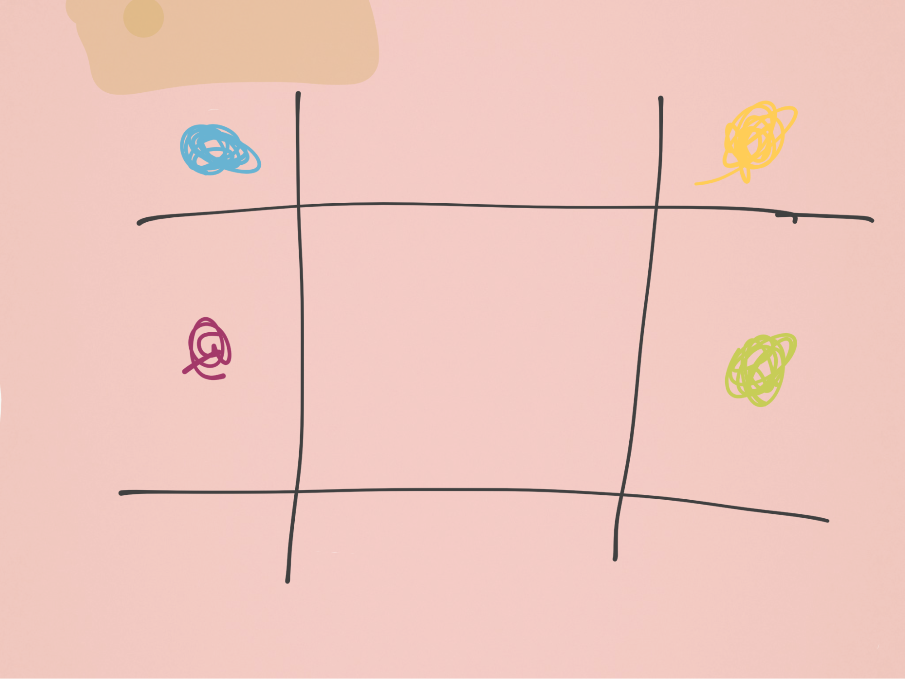
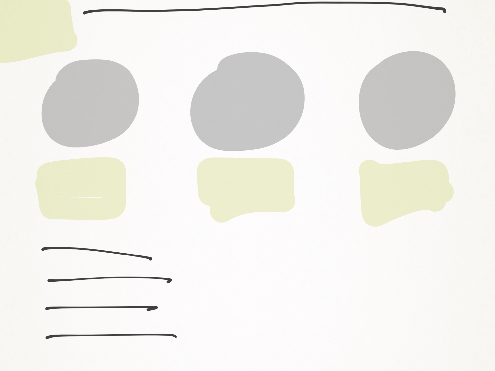
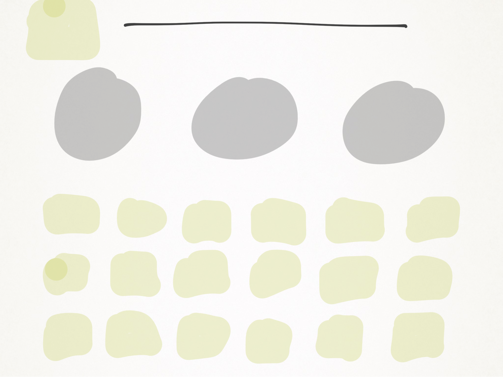

Core Design
The genre is puzzles though inspirations for this game is to find different ways to confuse and outsmart your friends,
the use of puzzles came from me(Daniel(B00291776)) watching the anime psybrain which is a puzzle show.
This helped create the puzzles that are in the game and the way each puzzle is perceived.
The other inspiration was sudoku for the first puzzle, it involves the numbers we just changed it a bit.
Each puzzle will have its own theme, the first being colour as that is a main aspect of the puzzle.
The second is fantasy, the drunken dwarves. The last is creation as each object is man made.
the game as a whole will be made using phaser as that is the simplest to use with the minimalist look we are going for.
The main page will have four buttons, one for each puzzle and a credit button here is how it should look. The green square represents a button.

Magic Square
The first puzzle is a version of the magic square puzzle. In this puzzle each row, column and diagonal must equal the same number.
In this puzzle we changed the numbers to colours to add more difficulty. Each colour makes a number.
The puzzle will be a three by three grid were if you click in one of the boxes a colour will show up,
this will make it easy for the players to tell where each part goes.
The background is one of the few colours not used so that each of the colours that are used is seen more easily.
The number of letters in the word of the colours shows what the numbers are. When these numbers are placed in the 3x3
grid in the correct order the puzzle will be complete and then a banner will appear saying you got it right
(this will happen for each puzzle) below will be the answer to the magic square puzzle.
Here is how the puzzle should look-
Key-
Green box = "button"
Black Line = "Grid"

Puzzle Answer (mouseover to see)
5 | 4 | 6 | G | B | Y
---------- | ---------
6 | 5 | 4 | Y | G | B
---------- | ---------
4 | 6 | 5 | B | Y | G
the puzzle which is on the website is will just have three colours instead of nine.
As we were unable to get the entire nine colour system to work.
The Three Dwarves
The second puzzle is a reworded version of the three goddess’ puzzle.
In this puzzle you must find out who each goddess is by figuring out how the person before you did.
This puzzle is an old one that may be easy depending if you have seen it before.
All that you have is the three questions and what the names are but not who’s who.
The question will be at the top of the screen with the characters below,
under each character will be how they answered the other person's question.
Above the characters will be a box where you can select the correct name,
with the rest of the worded puzzle being at the bottom.
The placement of this is so that the important details will be the first seen and the other info second.
The answer to this puzzle is just logical. All info that is given and the questions that the person asks
shows the answer easily but the way the answers are worded is what confused.
The character will be animated so that it has a different look than the other puzzles.
Once the answer is correct the banner will appear again.
Here is how it should Look-
Key-
Green Square = "Button"
Grey Circle = "Character/Image"
Black Line = "Text/Words"

Puzzle Answer (mouseover to see)
(From left to right)
The First Dwarf is drunk
The Second Dwarf is Sober
The Third Dwarf is Tipsy
Simple Similarity
The final puzzle is a simple worded puzzle, that may be seen more as a question than a puzzle.
The puzzle asks you to find what is similar about the three objects that are given,
you will have a choice between 50 words that you can choose from and you will have three chances to find the correct answer.
The puzzle will be set out as the question at the top with images of each item below.
Then between theses two will be the number of chances you have left.
At the bottom will be the 50 words that the answer could be.
If you guess a wrong answer it will be greyed out.
This puzzle is logical but also having a lot of random facts in your head might help.
Each object similarity is a word that nearly all people should know,
this is so that it's simpler for the person answering.
Once again a banner will appear if they get the answer correct.
Here is how it should Look-
Key-
Green Square = "Button"
Grey Circle = "Character/Image"
Black Line = "Text/Words"

Puzzle Answer (mouseover to see)
Accident
Final thought
What we hope the player will gain from this game,
is satisfaction when the puzzle is solved but frustration while solving it,
not with the mechanics but with not being unable to solve the puzzle.
This should make the player use their brain more and give them a way to torture their friends.